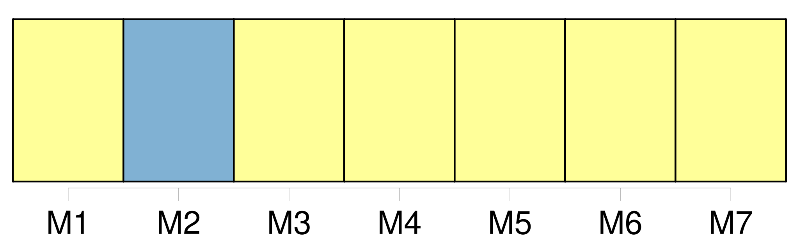

Longueur nb maillons : 50 mentions |
 |
Si de tels autres moyens sont utilisés, le transporteur délivre à [l'expéditeur] , à la demande de [ce dernier] , un récépissé de marchandises permettant l'identification de l'expédition et l'accès aux indications enregistrées par ces autres moyens. [1 phrases]
Article 6 [2 phrases]
La lettre de transport aérien est établie par [l'expéditeur] en trois exemplaires originaux. [1 phrases] Le premier exemplaire porte la mention " pour le transporteur " ; il est signé par [l'expéditeur] Le deuxième exemplaire porte la mention " pour le destinataire " ; il est signé par [l'expéditeur] et le transporteur.
Le troisième exemplaire est signé par le transporteur et remis par lui à [l'expéditeur] après acceptation de la marchandise. [1 phrases]
La signature du transporteur et celle de [l'expéditeur] peuvent être imprimées ou remplacées par un timbre. [1 phrases]
Si, à la demande de [l'expéditeur] , le transporteur établit la lettre de transport aérien, ce dernier est considéré, jusqu'à preuve du contraire, comme agissant au nom de [l'expéditeur]
Article 8 [2 phrases] [L'expéditeur] est responsable de l'exactitude des indications et déclarations concernant la marchandise inscrites par [lui] ou en [son] nom dans la lettre de transport aérien, ainsi que de celles fournies et faites par [lui] ou en [son] nom au transporteur en vue d'être insérées dans le récépissé de marchandises ou pour insertion dans les données enregistrées par les autres moyens prévus au paragraphe 2 de l'article 4.
Ces dispositions s'appliquent aussi au cas où la personne agissant au nom de [l'expéditeur] est également l'agent du transporteur. [1 phrases]
L' [expéditeur] assume la responsabilité de tout dommage subi par le transporteur ou par toute autre personne à l'égard de laquelle la responsabilité du transporteur est engagée, en raison d'indications et de déclarations irrégulières, inexactes ou incomplètes fournies et faites par lui ou en son nom. [1 phrases]
Sous réserve des dispositions des paragraphes 1 et 2 du présent article, le transporteur assume la responsabilité de tout dommage subi par [l'expéditeur] ou par toute autre personne à l'égard de laquelle la responsabilité de [l'expéditeur] est engagée, en raison d'indications et de déclarations irrégulières, inexactes ou incomplètes insérées par [lui] ou en [son] nom dans le récépissé de marchandises ou dans les données enregistrées par les autres moyens prévus au paragraphe 2 de l'article 4. [3 phrases]
Les énonciations de la lettre de transport aérien et du récépissé de marchandises, relatives au poids, aux dimensions et à l'emballage de la marchandise ainsi qu'au nombre des colis, font foi jusqu'à preuve du contraire ; celles relatives à la quantité, au volume et à l'état de la marchandise ne font preuve contre le transporteur que si la vérification en a été faite par lui en présence de [l'expéditeur] , et constatée sur la lettre de transport aérien, ou s'il s'agit d'énonciations relatives à l'état apparent de la marchandise. [1 phrases]
[L'expéditeur] a le droit, à la condition d'exécuter toutes les obligations résultant du contrat de transport, de disposer de la marchandise, soit en la retirant à l'aéroport de départ ou de destination, soit en l'arrêtant en cours de route lors d'un atterrissage, soit en la faisant livrer au lieu de destination ou en cours de route à une personne autre que le destinataire initialement désigné, soit en demandant son retour à l'aéroport de départ, pour autant que l'exercice de ce droit ne porte préjudice ni au transporteur, ni aux autres expéditeurs et avec l'obligation de rembourser les frais qui en résultent. [1 phrases]
Dans le cas où l'exécution des instructions de [l'expéditeur] est impossible, le transporteur doit [l'] en aviser immédiatement. [1 phrases]
Si le transporteur exécute les instructions de disposition de [l'expéditeur] , sans exiger la production de l'exemplaire de la lettre de transport aérien ou du récépissé de la marchandise délivré à [celui -ci] , il sera responsable, sauf son recours contre [l'expéditeur] , du préjudice qui pourra être causé par ce fait à celui qui est régulièrement en possession de la lettre de transport aérien ou du récépissé de la marchandise. [1 phrases] Le droit de [l'expéditeur] cesse au moment où celui du destinataire commence, conformément à l'article 13.
Toutefois, si le destinataire refuse la marchandise, ou s'il ne peut être joint, [l'expéditeur] reprend [son] droit de disposition. [1 phrases]
Sauf lorsque [l'expéditeur] a exercé le droit qu' [il] tient de l'article 12, le destinataire a le droit, dès l'arrivée de la marchandise au point de destination, de demander au transporteur de lui livrer la marchandise contre le paiement du montant des créances et contre l'exécution des conditions de transport. [4 phrases]
Article 14
Article 15
Les articles 12, 13 et 14 ne portent préjudice ni aux rapports entre [l'expéditeur] et le destinataire, ni aux rapports mutuels des tierces parties dont les droits proviennent de [l'expéditeur] ou du destinataire. [3 phrases] [L'expéditeur] est tenu de fournir les renseignements et les documents qui, avant la remise de la marchandise au destinataire, sont nécessaires à l'accomplissement des formalités de douane, de police ou d'autres autorités publiques.
[L'expéditeur] est responsable envers le transporteur de tous dommages qui pourraient résulter de l'absence, de l'insuffisance ou de l'irrégularité de ces renseignements et pièces, sauf le cas de faute de la part du transporteur ou de ses préposés ou mandataires. [21 phrases]
Si, sans le consentement de [l'expéditeur] , le transporteur remplace en totalité ou en partie le transport convenu dans l'entente conclue entre les parties comme étant le transport par voie aérienne, par un autre mode de transport, ce transport par un autre mode sera considéré comme faisant partie de la période du transport aérien. [15 phrases] Dans le transport de marchandises, la responsabilité du transporteur, en cas de destruction, de perte, d'avarie ou de retard, est limitée à la somme de 17 droits de tirage spéciaux par kilogramme, sauf déclaration spéciale d'intérêt à la livraison faite par [l'expéditeur] au moment de la remise du colis au transporteur et moyennant le paiement d'une somme supplémentaire éventuelle.
Dans ce cas, le transporteur sera tenu de payer jusqu'à concurrence de la somme déclarée, à moins qu'il prouve qu'elle est supérieure à l'intérêt réel de [l'expéditeur] à la livraison. [82 phrases] S'il s'agit de bagages ou de marchandises, le passager ou [l'expéditeur] aura recours contre le premier transporteur, et le destinataire ou le passager qui a le droit à la délivrance contre [le dernier] , et l'un et l'autre pourront, en outre, agir contre le transporteur ayant effectué le transport au cours duquel la destruction, la perte, l'avarie ou le retard se sont produits.
Ces transporteurs seront solidairement responsables envers le passager, ou [l'expéditeur] ou le destinataire. [5 phrases]
CHAPITRE V |
|
Il est possible de télécharger la ressource sur la page Ortolang |
Si vous avez des questions ou vous voyez des erreurs, merci d'envoyer un mail à silvia.federzoni89@gmail.com |